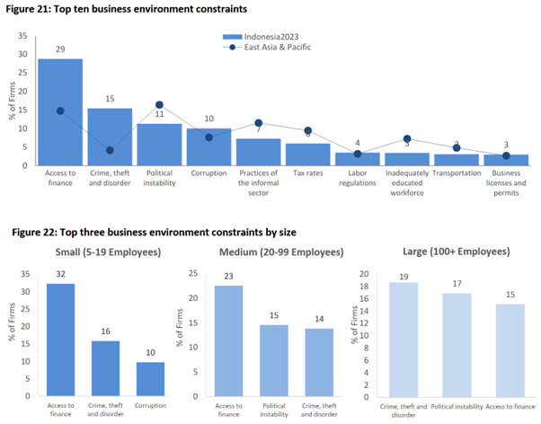
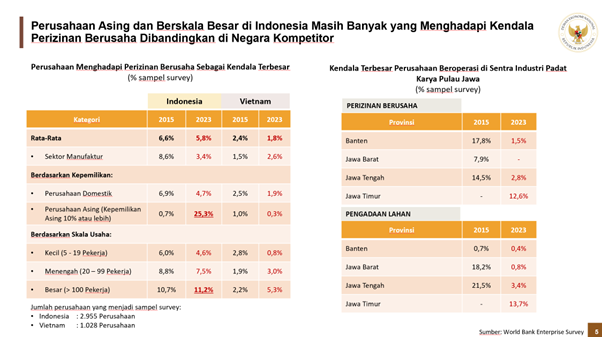
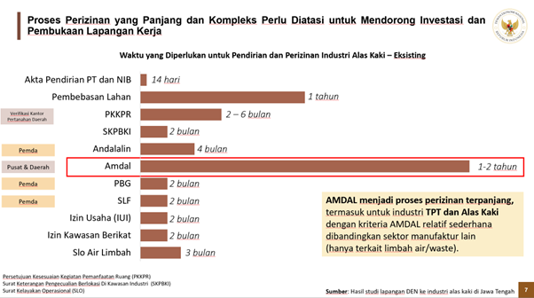
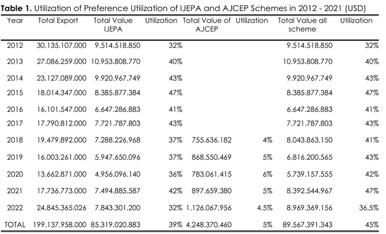
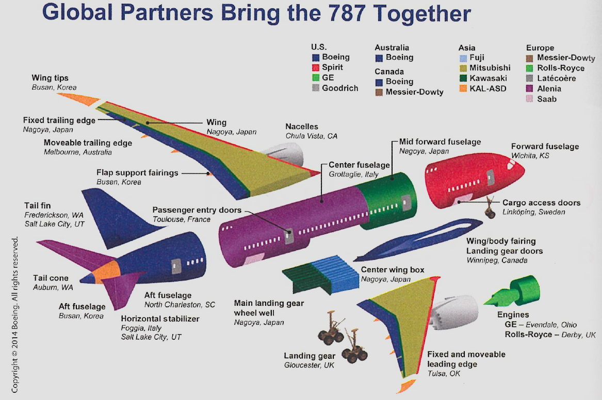
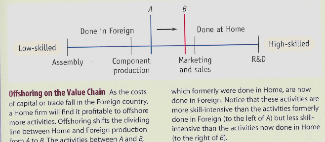
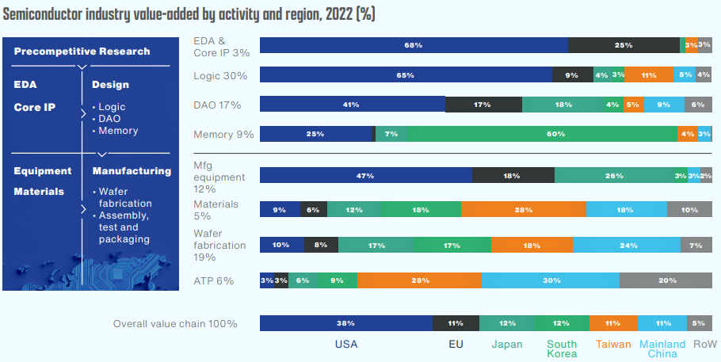

Mendorong Perdagangan untuk Pertumbuhan
September 2, 2025
Profile
I Made Krisna Gupta (Imed)
Dewan Ekonomi Nasional, Universitas Indonesia, Center for Indonesian Policy Studies
S3 di Australian National University, S2 di UI/VU Amsterdam
Fokus riset di perdagangan internasional dan kebijakan publik (particularly kebijakan industri)
more at krisna.or.id atau @imedkrisna
Outline
Problem investasi
Perdagangan, FTA dan GVC
Problem investasi
Sumber: WBES
Problem investasi
Sumber: DEN
Problem investasi
Sumber:DEN
Problem investasi
Kemenlu memiliki peran strategis untuk menghubungkan investor luar negeri dengan Indonesia
Akan tetapi, Kemenlu akan sulit “jualan” jika kondisi investasi domestik masih penuh ketidakpastian.
Kemenlu harus memastikan institusi domestik benar-benar bekerja sesuai materi promosinya.
Pentingnya perdagangan
Perdagangan merupakan salah satu kunci sukses investasi.
Dewasa ini, perusahaan asing masih kencang terlibat dengan Global Value Chain, di mana kelancaran perdagangan internasional memegang peran penting.
Itulah sebabnya pabrik-pabrik tekstil dan sepatu memilih membentuk kawasan berikat: agar lancar memasok bahan baku.
Tapi outputnya jadi harus 100% ekspor.
Why Trade is Good?
Comparative advantage and specialization: tech & resources.
More variation & competition: inovasi, efisiensi, learning by doing.
Economies of scale: larger market efisien jika ada fixed cost besar.
Global Value Chain and access to inputs: bahan baku, teknologi, skill.
ToT Gain Problem
ToT gain memungkinkan sebuah negara yang besar dapat untung dengan tarif.
Reaksi terbaik bagi negara partnernya, jika besar juga, adalah dengan retaliasi: memberi tariff untuk barang lain.
Ini adalah contoh klasik dari prisoner’s dilemma:
jika A free trade, B being protectionist will get ToT gain.
Tapi jika keduanya protectionist, keduanya lose out.
Negara besar
AS adalah contoh negara besar. Merupaka pembeli produk jadi terbesar di dunia.
Ketika AS memberikan terif impor, warganya worse off karena ada pajak ekstra. Mengakibatkan inflasi.
Tapi tarif ini bisa teroffset karena AS punya market power:
eksportir terpaksa menurunkan harga
exchange rate appretiation
Negara besar
Karena 2 efek tadi, bisa jadi AS akan untung.
Yang rugi tentu saja trading partnernya.
Negara lain dapat melakukan retaliasi agar keuntungan AS tersebut hilang, tapi tentu saja negara yang retaliasi tersebut akan rugi juga.
Inilah yang disebut prisoner’s dilemma: equilibrium terbaik bisa jadi lose-lose.
Secara umum, FTA memberi kepastian lebih baik.
FTA
Karena itulah dilakukan FTA: suatu perjanjian mengikat agar tidak terjadi ekuilibrium yang lose-lose tadi.
Beberapa mengkritik FTA sebagai bentuk pengurangan sovereignty.
Tapi FTA sebenarnya seperti pernikahan: kebebasan individu sedikit dibatasi, tapi yang penting adalah bahagia.
Tentu saja kompleksitasnya sama: kadang bercerai dianggap pilihan yang lebih baik. Makanya terjadi Brexit dan Trump tariff.
Utilization rate
Datanya tidak tersedia secara luas.
Ada beberapa FTA untuk negara yang sama.
Seberapa besar ini masalah gap informasi?
Jika perbedaan tarifnya tidak signifikan, maka utilization rate tidak akan naik.
Terutama jika ada compliance cost
makin hilir makin costly
30-50% sudah considered ok
Utilization rate
No more aeroplane countries
Offshoring
The provision of a service or the production of various parts of a good in different countries that are then used or assembled into a final good in another location is called foreign outsourcing.
- sometimes called offshoring.
Offshoring is a typoe of international trade that differs from the type we see in Ricardian and H-O models where goods traded are final goods.
Offshoring is trade in intermediate inputs, which can sometimes crosses several borders before turned into a final good.
Offshoring
At its core, offshoring has the same reasoning as our standard trade model:
- A firm in a country is better of sourcing part of their production in countries with comparative advantage in that good.
In essence, offshoring breaks down a final good into several intermediate goods (and services).
- these goods embed different factor intensities.
Modeling the offshoring
For any given final product, we unbundle its process of production. We first list these process from start to finish.
For example, to make an aeroplane, you need to start with research and development (R&D), produce components, assemble them, and then do marketing and sales as well as customer service.
We then rearrange the list in terms of value: from lower value to higher value.
- e.g., start with assembly, end with R&D.
Modeling the offshoring

Offshoring model
panel (a) is the unbundle list based on production process, while panel (b) is the rearranging from lower value to higher value.
In the panel (b), there exists a point A where we can slice/unbundle the production process: a low-value process (left of A), and a high-value process (right of A).
Suppose Home country is a high-tech country, then it’s better for home to outsource the left bundle abroad.
Offshoring
This is the second unbundling: we unbundle process of production into two: high-value bundle and low-value bundle.
Two countries with different labor profile then trade these bundles.
Just like Standard Trade Model (STM), we can model this with a relative wage vs relative labor demand graph.
Lower trade cost
Second unbundling
The new ‘hi-tech-low-wage’ mix shifted manufacturing & knowhow massively to a handful of developing nations.
The result is the great convergence between 1990-2014:
Developed countries are catching up, enlarging their pie share in the global GDP.
While G7 economies relatively reduced in the global GDP share.
Consequences
New globalization (aka the second undbundling) breaks monopoly that G7 labour had on G7 knowhow. Now G7 firms can pick other labor in other countries basically.
New globalization affects economies with finer resolution: it used to be that countries compete on the final product level, now on the manufacturing stage and job level.
Impact of the new globalization is now more sudden, individual, unpredictable and uncontrollable.
Consequences
production that used to be happened all in one country is now become an international trade.
Trade policy affects not just final product, but also granularry
Predictable trade policy become even more important because changes in one chain of value affects the overall production.
National competitiveness is now become regional competitiveness.
Consequences
Developing countries now don’t have to start to build final good from the ground-up. They can join the value chain / production network.
Vietnam is one of the largest smartphone exporter. It does not have to know how to make the whole smartphone, but starting from the assembly.
China also started with assembly and then become more upstream
G7 competitiveness now relies on offshoring. Cannot compete without one.
Analytical consequences
Trade data is no longer useful if large components are sourced from import.
You can know how much salt we import, but it’s much harder to know who use them: end consumers? food industry? Chemists?
The value of a country’s export may be doublecounted: Vietnam is not making phones. Just assembling.
This is where TiVA comes in.
TiVA
Questions
Seberapa besar kontribusi asing / negara tertentu terhadap produksi dan/atau ekspor di sebuah industri?
Seberapa besar kontribusi negara kita dalam supply chain negara lain?
Seberapa jauh keterlibatan industri kita (backward+forward) di dalam Global Value Chain (GVC) dibandingkan negara lain?
GVC in the food industry

GVC in semiconductor
The third unbundling
Third unbundling is a relatively new phenomenon: happens when face-to-face cost reduce.
The industry 4.0: face-to-face cost reduces thanks to telepresence and telerobotics. Data transfer, human-machine and machine-machine interface allows it to happen.
Services and digital trade is taking the front stage. A story for another time.